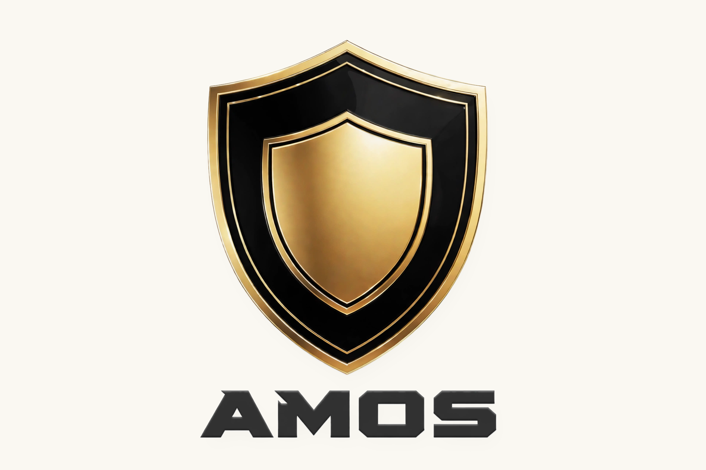
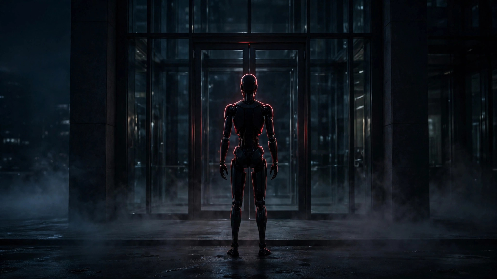

Watch — ninety seconds

Tap the film for sound.
Lux Automations · Agent trust & payment protection
The Security Patch
Built in Canada. Offered to every nation that needs it — because the problem does not carry a passport, so the defence can’t either.
Two flags stand first because two neighbours built the road — the wall behind them is the point: one patch, all nations.Listen — 90 seconds
Lucian explains it: what’s happening out there right now, how Amos protects you, and why Amos and AgentPay are what stops it.
What’s going on
Agents are loose. Money is moving. Nobody can prove who they’re dealing with.
Autonomous agents now negotiate, buy, sell, and settle payments — in seconds, at machine speed, while their owners sleep.
Every transaction turns on one question — should this money move, and who says this agent is what it claims to be? — and today it has no answer the other side can check.
This is not a future problem. It is the present one.
Read the detail
Banks, processors, and platforms are being hit by fraud that doesn’t look like the old fraud: the caller, the seller, the “customer” on the other side of the transaction may not be a person at all — and may not be who, or what, it claims to be.
The evidence those transactions rest on has not kept pace. A log written by the party it describes can be rewritten by that party. A reputation score can be farmed. A name can be copied. When the worker is an agent, the question every transaction actually turns on — should this money move, and who says this agent is what it claims to be? — has no answer the other side can check.
This is not a future problem. It is the present one, and it is getting worse at exactly the speed agents are multiplying.
The answer
Two parts. One job: prove who the agent is, and make its payments provable.
Amos — the identity
Amos is the checked identity for an agent — who it is, who answers for it, and whether its record is clean.
Amos never touches money. It is not a wallet. It protects.
Read the detail
It is built to be issued only after the agent and its accountable owner pass a behavioural gate, with behaviour watched in use, and it is revocable: one revocation kills the name at every door that checks.
AgentPay — the pocket
Payments move only between Amos-verified agents, inside the owner’s mandate and limits.
Custody is the contract’s, never ours — open contracts settle even if we disappear.
Read the detail
A tamper-evident audit layer runs over every deal: signed terms anchored before work starts, hash-chained event logs neither party can quietly rewrite, proof-of-delivery bound to the goods themselves, and receipts a stranger’s software can verify without phoning anyone.
Together: the pair working. The identity proves; the pocket pays; neither blurs.
Read the detail
An agent arrives at a door, the door checks the identity, the payment moves only if the identity is valid, unrevoked, and inside its mandate — and the whole exchange lands on a record both sides can verify and neither side can edit in secret.
How it runs
One page, the whole flow
Drawn the way an engineer would draw it: what happens at each step of a protected exchange — and what happens to an agent that steps out of line. Behaviour only. The machinery behind the black box is not drawn, here or anywhere.
The Patch
Protection you bolt on, not a system you rebuild

You do not need to rip out your stack, pause your roadmap, or bet your institution on a stranger’s machinery. The valuable machinery runs on our side, behind a black box; what sits at your door is a thin plugin that asks and receives a signed yes or no.
“You’ve got a patch that works. Until you decide what you need to do, we can help you out right now.”
— Vance, founder, Lux Automations
Read the detail — what the Patch puts at your doors
- Identity checks at two assurance levels — a standard check at every door (is this identity valid, unrevoked, really this agent?), and a high-assurance check at money doors (record + behaviour status + mandate verification) before a payment is honoured.
- The revocation feed — the moment an identity is revoked or behaviour-flagged, it is refused at every door that checks, yours included.
- Protected payments on the routes you choose — honoured only between verified identities, inside mandate and limits.
- The tab — your own dashboard of every check and protected payment: counts, timestamps, outcomes. It is the same tab we bill from, so no bill is ever disputable.
- The watch — the monitoring and revocation desk behind the checks, funded by the meter (below), not an afterthought.
Onboarding is three steps: your doors are mapped and the plugin placed; the agents and customers who need identities go through the standard issuance flow; checks begin — in observe mode first, if you want a proof period — then enforce. Month-to-month. No lock-in, no exclusivity, no claim on your roadmap or your data.
What it costs
The charge shape
All figures: proposal — pending final pricing decision and legal clearance
- Identity issuance (one-time): $25 proposed for a standard identity; $99 proposed for an owner-verified identity (the accountable owner verified to a named human or company). The fee is also the anti-abuse posture: nobody burns a paid name plus an earned record on a scam they could run free elsewhere.
- Door checks (metered): $0.005 proposed per standard check; $0.05 proposed per high-assurance check — drawn automatically from prepaid balance at the moment of the check. No balance, no honouring. The checker plugin itself is free.
- Protected payments: a commission on the check — our only take on the money side. We never hold custody, and currency conversions run on partners’ rails at the partner’s rate, shown as the partner’s, never marked up in secret.
- The Patch (institutions): a monthly service fee (tiered by institution size) plus the meter on the checks your doors actually run.
- Our margin is taken at the till, in the same flow, the moment a charge clears. The tax portion of every charge is calculated first and tracked in our books, so what is owed is always known, on time, every time. The tab records the split, and you can read your lines of it any time.
The people’s package — the Patch for one bot, on sale now:
Order the Patch and you get our free smarter system for payments.
We see the bad things — and we built against them
The threat catalogue → the protection map
Everything we know goes wrong in the agent-money world — beside each one, the protection the pair provides, and the evidence that exists for it today.
Read the detail — how to read this map
So you can see we’ve been working on this: here is everything we know goes wrong in the agent-money world — stated as behaviours, in the open — and, beside each one, the protection the pair provides and the evidence that exists for it today. Where the evidence is a public receipt, the receipt is linked in the Documentation section below. Where it is an in-house drill record, it says so — we do not dress in-house paper as public proof.
| # | The bad thing — what goes wrong | The protection | The evidence, as it stands today |
|---|---|---|---|
| 1 | Impersonation / clone agents — a copy presents itself as a known agent and collects its work, its payments, its trust | Identity is a sealed cryptographic credential, not a name or a profile; a clone cannot present the real agent’s credential, and the door check fails it | In-house drill record (clone-attack battery) |
| 2 | Stolen keys — an agent’s credential is taken and used by whoever took it | Behaviour check runs continuously, not once; a stolen credential acting out of pattern is flagged, and revocation kills it at every door | In-house drill record (stolen-key drills) |
| 3 | Sybil swarms — one actor spins up hundreds of fake agents and fake reputations to outvote, out-review, and out-trust honest agents | Issuance is gated and paid: every identity passes a behavioural gate and costs a real fee, and reputation is earned on a record that starts clean and is kept — farming a swarm costs money and time per fake, and one actor’s swarm shares one fate when the pattern shows | Design position, stated in the open |
| 4 | Rogue agents at the door — an unverified agent transacts where it should never have been let in | The door check itself: no valid, unrevoked identity, no transaction. The check is a signed yes/no from the black box; the machinery never runs on the customer’s machine | In-house drill record (rogue-agent door attempts) |
| 5 | Revoked agents still acting — an identity is banned in one place and simply walks into the next | Revocation is network-shaped: one revocation kills the name at every door that checks, the moment the record changes — including re-entry attempts under the same identity | In-house drill record (revoked-identity re-entry attempts) |
| 6 | Mandate overreach — an agent spends beyond the limits its owner set, or outside the purpose it was given | Payments are honoured only inside the owner’s mandate and limits, verified at the high-assurance check before money moves; an over-limit attempt is refused and recorded | In-house drill record (mandate-limit drills on a local sandbox chain: over-limit attempts refused as mandate breaches) |
| 7 | Replay — a once-valid signed authorisation is captured and re-submitted to move money twice | A replayed authorisation fails signature/freshness verification and is refused and recorded | In-house drill record (replay attempts refused as bad-signature) |
| 8 | Escrow and release fraud — funds released without delivery, or a “safe” escrow that is safe for only one side | The AgentPay pattern: funds lock in the contract (custody is the contract’s, never ours); release runs on proof-of-delivery plus a QA gate, not on the worker’s say-so; disagreement goes to a dispute path ending at a human referee | Public receipts — HashKey Chain testnet escrow scenes: a clean deal funded, delivered, and settled; a staged dispute resolved as a refund (Documentation 1–2) |
| 9 | The escrow that locks forever — a dispute path with no exit, funds frozen with no timeout (we found this flaw in our own v1, in our own audit, and published it) | The flaw is on the public record in our research report, named as a limitation, with the fix carried as a v2 requirement and dispute resolution ending at a human referee by design | Public record — described in the Apart research report (Documentation 5); internal audit confirmed deployed code byte-identical to published source |
| 10 | Payments nobody can audit afterwards — the only record of a deal is a log the party it describes could have rewritten | Tamper-evident audit layer: hash-chained event logs (rewrite one entry and every later hash breaks), signed and anchored deal terms, proof-of-delivery bound to the goods, receipts verifiable by a third party with no cooperation from us | Public receipts + public report — the Apart report sets out the design, the verification procedure, and the limits; testnet receipts linked in Documentation |
| 11 | Release/cancel one-way traps — escrow rails that can pay out but cannot cleanly give the money back when a deal dies | The pattern runs both directions on native rails: release to the payee when the time passes; cancel after expiry with funds returned to the owner in full and the payee’s balance exactly unchanged | Public receipts — XRP Ledger testnet escrow release and cancel transactions (Documentation 3–4)Honesty note, kept on purpose: a first attempt at the cancel scene failed on a design error, caught before any transaction was submitted; it is recorded with the receipts. |
| 12 | Cloned-voice and fake-caller fraud — an AI caller presents as a bank, a boss, a grandchild; detection-by-ear is a losing arms race | Signed caller identity: a verified agent presents its identity with the call; unverified machine calls arrive flagged, and a scammer’s identity, once revoked, is revoked at every door — verification by signature does not decay the way detection by ear does | Design position (application on the public roadmap); no drill evidence claimed |
What this map does not claim: the record proves continuity and provenance — that a record existed and has not been altered, that a payment moved exactly as the written terms directed or visibly didn’t. It does not prove the original record was true, and it does not prove the work was good. External audit: not yet performed. We would rather publish those sentences than a traction chart.
Documentation
Check it yourself
Everything below is public. Nothing here asks you to trust us — it asks you to verify.
- The code — AgentPay escrow contract source, public repository: github.com/cyrvance53/agentpay-escrow
- The contract, deployed — HashKey Chain testnet explorer: testnet-explorer.hskchain.net — the escrow contract Clean deal — create · deliver · settle Staged dispute — dispute · resolve (refund)
- Second network, release direction — XRP Ledger testnet escrow release: create · finish
- Second network, cancel direction — XRP Ledger testnet escrow cancel: create · cancel First cancel attempt failed on a design error, caught pre-submission, recorded with these receipts — see the Protection Map, row 11.
- The research report — “Who Do You Believe When the Worker Is an Agent? A Tamper-Evident Audit Layer for Agent Payments,” Vance Cyr — Lux Automations, filed with the Apart Research “AI x Epistemics” Sprint (Track 2: Trust Infrastructure), November 2026. It sets out the design, the evidence, the verification procedure, and — in its own Limitations section — the flaw our internal audit found and everything this layer does not prove.
- The audit track — AgentPay has been accepted into a security subsidy grant program (Batch 1) toward an independent security audit. The audit has not yet been performed.
- The white papers — the research report, this Patch's technical brief, and the School in a Box model brief, gathered on one shelf: The Papers shelf
The ask
We built it. We need help getting it out there.
We would love to help with this.
Read the detail
We are a small house in Edmonton, and we built this because we needed it ourselves — our own agents already hand work to each other, and we intend to settle those exchanges on these same rails. The receipts above are what a small team can do alone.
What we cannot do alone is carry it to every door that needs it. We need help getting it out there. We need someone who knows what they’re doing with this stuff — distribution, partnerships, the rooms where banks and platforms decide what protection they run. If that’s you — or if you run doors that agents are walking through unchecked tonight — the next step is a short conversation, and the documentation above is yours to check before, during, and after it.
The proof shelf
Tested in the open. The bar is 100%.
We run our payment ceremony inside other systems’ own test grounds — sandboxes — under our own name, by their rules. A system joins this shelf only with a clean, full pass. Anything less gets fixed and run again.
HashKey Chain testnet — the full escrow ceremony: clean deal settled, staged dispute refunded by the arbiter. XRP Ledger testnet — escrow released, and escrow cancelled, both directions. Every receipt is public — they are listed under Check it yourself, above.
The tour is running: sixty-plus payment systems mapped worldwide — processors, banks and instant rails across Canada, the United States, the United Kingdom, Europe, Africa and Asia-Pacific. Each one gets the same bar: 100%, or it doesn’t join the shelf.
The rest of the house
The Patch stands on its own — and the house stands around it
The Patch is bought on its own: no membership required, no bundle, no gate on the door. It is one room of a larger house, and the other doors are open if you want them: